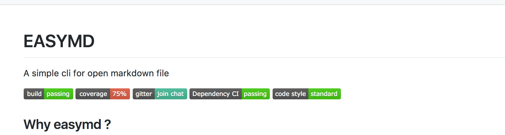
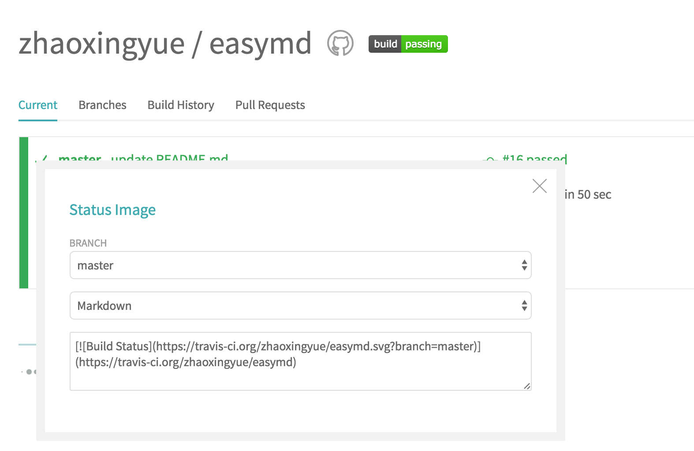

Node.js 目前大量应用于大前端和 web 端程序。但 Node.js 不止于能编写这些。今天我们就使用 Node.js 来编写一个开源的命令行工具。
github 新建项目
- 在 github 新建一个 repository
- 在本地 clone 下刚刚建好的项目
编码开始
commander 模块
先看一下 tj 大神写的模块
- Init
|
|
- Install
|
|
创建测试文件
|
|
将下面的代码添加到 lib/index.js
- run
|
|
- npm link
将下面的 json 复制到 package.json 中，以建立一个可用的终端命令。
|
|
现在在终端中就会产生一个可用的 easymd 命令。该命令链接到 lib/index.js。注： 注意文件头部
的 #! /usr/bin/env node
- test
|
|
添加处理终端参数的函数
commander.option 可以接受一个函数来处理终端中输入的参数，看下面代码:
|
|
- test
|
|
项目附加功能
看下面 github 中的徽章

这些徽章分别是:
travis-ci（项目持续集成）
travis-ci 用于项目持续集成
配置
- 注册并关联到 github 项目
- 在项目根目录添加 .travis.yml 文件
|
|
以上是示例配置，具体可参考官方文档
- 在 travis 该项目中复制链接(点击徽章，会弹出链接)

coveralls（ 代码覆盖率）
coveralls 需要代码覆盖率测试工具生成的代码覆盖率信息
配置
拿 ava 为例，在 easymd 项目中使用的是 ava 测试框架。覆盖率检验工具是 nyc。
- 注册并关联到 github 项目
- 关联到项目之后 会在该项目的 setting 中获取到 repo_token
在项目根目录创建 .coveralls.yml 文件
12service_name: travis-prorepo_token: your repo_token安装 coveralls
1npm install coveralls --save-dev在 package.json 中配置 test 运行脚本
|
|
这样每次代码提交都会运行该测试。得出覆盖率的徽章。
gitter
一群基佬的在线聊天系统
配置
- 注册并创建一个聊天室，关联到 github 项目
- 这个链接在哪找不到了 妈的 两天前还配置了呢
dependencyci
依赖是否可以成功安装
配置
- 注册并关联 github 项目
- 这个徽章够明显关联完就能看到
code style
直接看链接就看的懂的
发布项目
- npm publish .